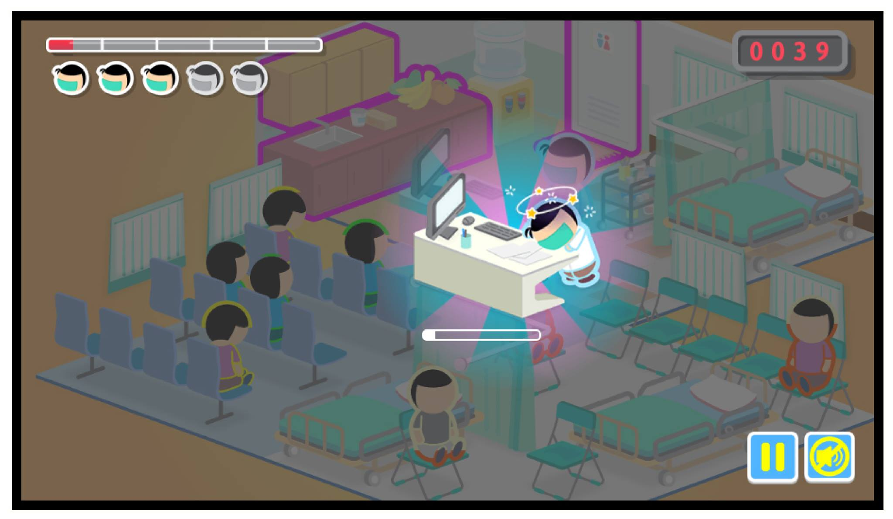

Condition: Low realism and Low proximity Link to the game
Figure 1. Emergency accident in four conditions with high and low realism and proximity
Condition: High realism and low proximity Link to the game
Condition: Low realism and High proximity Link to the game
Condition: High realism and High proximity Link to the game
Figure 2. Doctor fatigue and general game graphic in high and low realistic representation
Condition: Low realism
Condition: High realism

Figure 3. Violence and argument in Emergency room with high and low realistic representation
Condition: Low realism
Condition: High realism